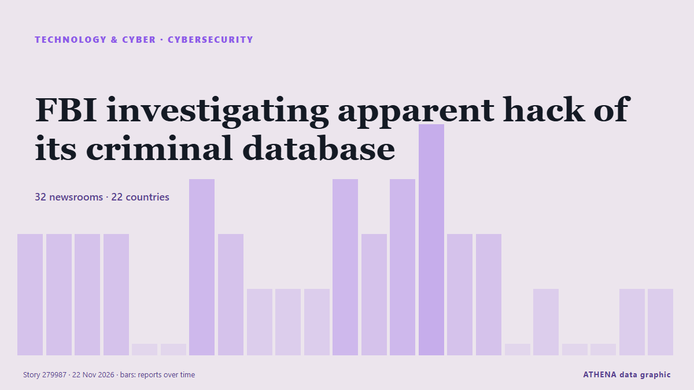

Cybersecurity
SponsoredPresented by  Cybernetics and Artificial Intelligence Lab Welcome to the Cybernetics and Artificial Intelligence Laboratory, established at the Department of Business Administration of the National and Kapodistrian University of Athens. The lab is headed by Professor Dimitrios Thomakos. The lab aims to do research that can be published in top venues. Our research uses tools and methods of Artificial Intelligence, and lies in the following areas: - Forecasting - Decision making - Cyber security - Finance We are always looking forward to collaborating with exceptional students!
Cybernetics and Artificial Intelligence Lab Welcome to the Cybernetics and Artificial Intelligence Laboratory, established at the Department of Business Administration of the National and Kapodistrian University of Athens. The lab is headed by Professor Dimitrios Thomakos. The lab aims to do research that can be published in top venues. Our research uses tools and methods of Artificial Intelligence, and lies in the following areas: - Forecasting - Decision making - Cyber security - Finance We are always looking forward to collaborating with exceptional students!
| 9 Nov | 0 |
|---|---|
| 10 Nov | 0 |
| 11 Nov | 0 |
| 12 Nov | 0 |
| 13 Nov | 0 |
| 14 Nov | 0 |
| 15 Nov | 0 |
| 16 Nov | 0 |
| 17 Nov | 2 |
| 18 Nov | 6 |
| 19 Nov | 6 |
| 20 Nov | 3 |
| 21 Nov | 2 |
| 22 Nov | 0 |

FBI investigating apparent hack of its criminal database
The FBI is investigating a reported breach of its criminal information database, according to U.S. media reports. from CBC News
Hackers are using AI to carry out cyber attacks. Experts say Kiwi organisations must act
Over the past week, there’s been a rise in attackers using open source AI tool Artex to target organisations worldwide. from RNZ National
UK running offensive cyber operations against Iran, Russia and China - Sky News
Britain is carrying out offensive cyber operations against Iran, Russia, China and North Korea, the commander in charge of its military cyber force told Sky News, a rare public admission that comes… from Iran International (English)
Cyberattack against Equinor is over with no data breach or impact on production
Equinor has brought a cyberattack against its systems to a halt without any reported disruption to production. from Offshore Energy
Hackers Leak Visa, Mastercard and JPMorgan Customer Data
A ransomware group breached third-party vendors, not the companies’ own systems. from Decrypt
Hackers Leak Data of 16,000 JPMorgan Chase Premium Customers in Cyberattack
NEW YORK, Nov 20: Hackers have leaked the personal information of thousands of wealthy JPMorgan Chase customers after a ransomware group published data allegedly stolen through a c... from Arab Times
Trump ousts cyber director after tech outages spark criticism
The Trump administration has faced criticism over its response to the tech outages. from The Straits Times
Darsheel Safary, Zain Khan Durrani and Prasad Oak team up for Alok Naik's cybercrime thriller Cyber
Darsheel Safary, who made his debut as a child actor in Aamir Khan's Taare Zameen Par, is set to share screen space with Shikara and Mukhbir actor Zain Khan Durrani in the upcoming cybercrime… from Bollywood Hungama
Transport for London breach exposes 265,000 Oyster card users' data
Transport for London (TfL) has announced that around 265,000 Oyster photocard customers may have had their account details exposed in a data breach. from BleepingComputer
A cyberattack using artificial intelligence targeted the EU in October, official says
A cyberattack carried out with artificial intelligence targeted the European Union in October, an official in Brussels said on Thursday, and some of the bloc's digital tools remain offline. from The Canadian Press (via CityNews)
NGINX2Root: F5 patches five critical NGINX vulnerabilities
F5 has patched five critical vulnerabilities in NGINX, the world’s most widely used open-source web server, that can allow remote code execution under certain conditions. from Help Net Security
Hacker, hoax attacks aim to destabilize Italy but pose no concrete threat, minister says
ROME, Nov 19 - A wave of hacking and hoax attacks that has targeted Italy in recent weeks aimed to destabilize the country, but posed no concrete threat to national security, Interior Minister Matteo… from The Straits Times
Credit union customer data obtained by 'bad actor' in cyberattack, says minister
Robert Troy confirmed that around 40 of Ireland’s 160 credit union institutions were affected by the hack. from TheJournal.ie
Java4Shell OpenJDK flaw: Exploitation is tricky and hinges on specific CPUs (CVE-2026-114938)
CVE-2026-114938, a memory corruption flaw in Open Java Development Kit’s Base64 decoder, can allow unauthenticated attackers to run code on servers hosting widely used Java applications. from Help Net Security